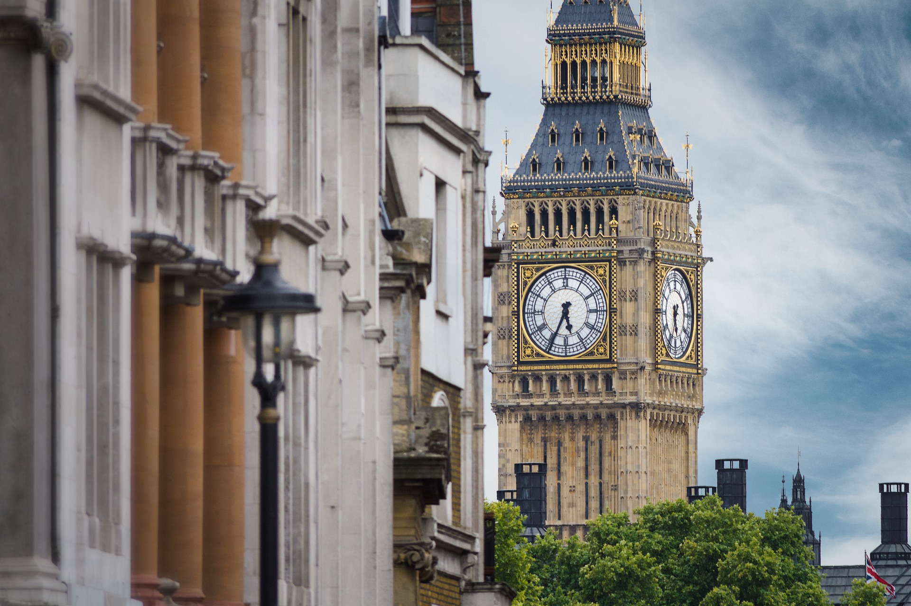

London
Why go to London?
The English writer Samuel Johnson famously said, "You find no man, at all intellectual, who is willing to leave London. No, Sir, when a man is tired of London, he is tired of life; for there is in London all that life can afford." More than two centuries have passed since Johnson's era, but his words still ring true. Life in London is nothing short of invigorating, and travelers find that one visit isn't enough to experience everything this two-millennia-old city has to offer. Here, the antiquated clasps hands with the contemporary. You'll find the historic Tower of London and the avant-garde Tate Modern. You can catch both the Bard's works and modern plays at Shakespeare's Globe and its accompanying Sam Wanamaker Playhouse. And while Londoners still praise the power of tea, they now make room for Starbucks and Costa Coffees here and there, and pressed juice too. A current leader in everything from politics and banking to fashion and music, London's culture compass is always attuned to what's next. Discover it all on one of London's best tours.
What you'll get
- Round-trip flights & airport transfers
- 6 nights in handpicked accommodations
- 6 breakfasts/li>
- 2 dinners
- Expert Tour Director
- 24/7 Support
Itinerary
Day 1: Overnight Flight
Board your overnight flight, bound for London. Get ready to see The Clock Tower, home of Big Ben, which is actually the bell inside the tower. #LondonFacts
Day 2: Arrive in London + Welcome Dinner
Welcome to Europe! Your bus transfer will be waiting at the airport when you arrive. Today is the day to adjust, make new friends and start the journey right. In the evening, enjoy a Welcome Dinner of local cuisine and drinks with fellow travelers at an authentic local spot. Afterwards, you’re free to take the party elsewhere!
Day 3: Tour London + Optional London Eye and River Cruise
Experience London’s most iconic sites with a local guide for a walking tour of the city. Take the rest of the day to return to any of these sites or find some favorites of your own.
Day 4: Enjoy a Free Day in London
Take the day to explore. Walk through some of the many royal gardens, shop on Oxford Street, go for high tea, or explore the city by foot. At 607 square miles, the city is an easy place to get your 10,000 steps in. Looking for a different perspective? See the city by boat and by giant ferris wheel during an optional excursion.
Day 5: Travel to Edinburgh + Tour Edinburgh
All aboard! Catch your train from King's Cross Station to Edinburgh, Scotland. Built on two extinct volcanoes, Edinburgh is an enchanting labyrinth of narrow alleyways, cozy pubs, and storybook castles. You'll get an in-depth look at Scottish history and modern day life with a guided sightseeing tour of the city and castle. After your tour, the evening is free to explore on your own. Catch live music in a pub, tour the haunted vaults below the city, hike to Arthur's Seat, and take in a city that feels too magical to actually exist in real life.
Day 6: The Scottish Highlands
Spend the day exploring the Scottish Highlands*. Its beauty is everywhere, so take in the view and a deep breath—because this is Scotland’s great outdoors.
Make an appointment with us to discuss about the trip.
Call at
1-900-789-4576